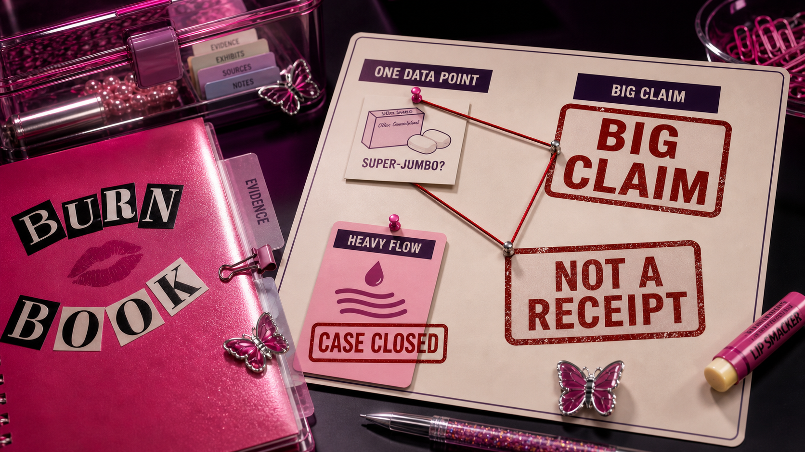
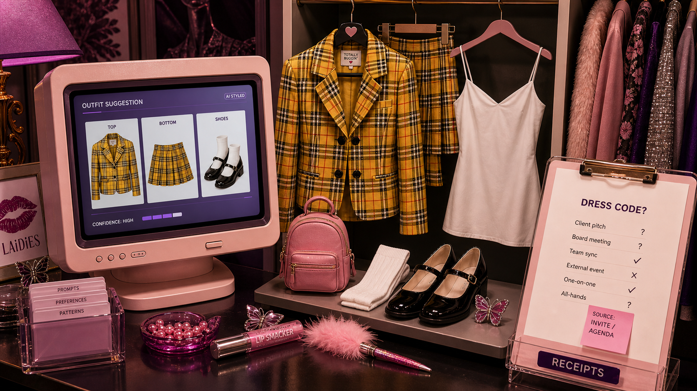
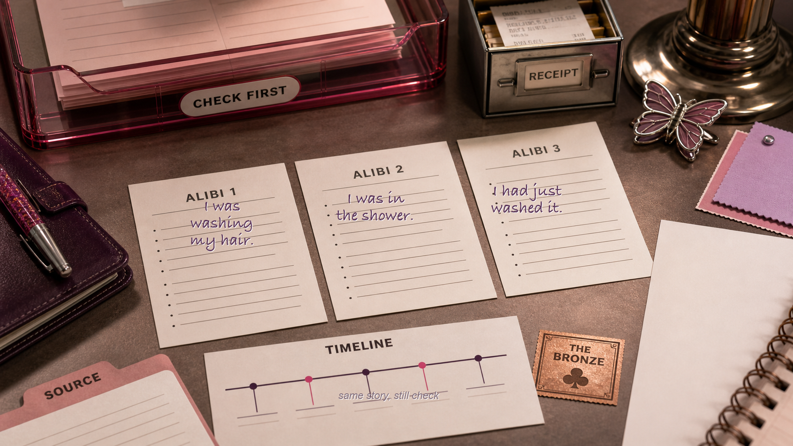
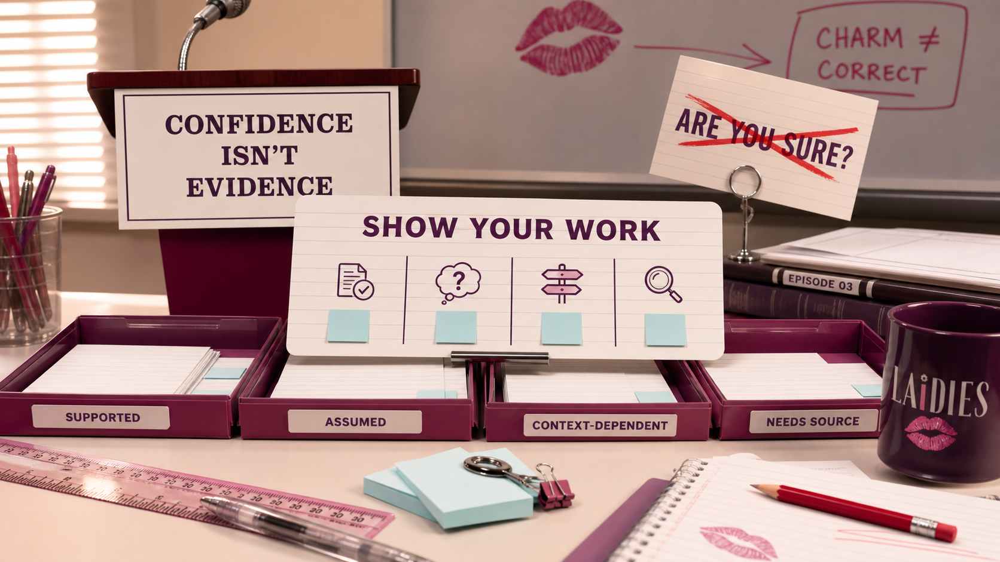
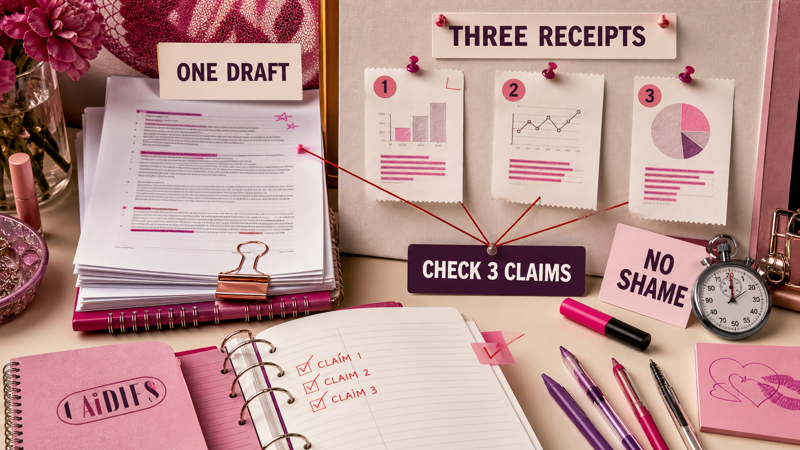

The Burn Book Problem
The one in which she gets a Regina George-confident answer, catches the Chutney detail, and checks the timeline before it borrows her name.

She learned that prompting is delegation. AI was not being mysterious; it was David Rose in Moira's kitchen, hearing "fold in the cheese" and trying to perform a cooking verb that was apparently passed down through oral tradition.
Once she got specific about the audience, context, tone, length, constraints, and what "good" looked like, the output changed. Same tool. Better brief. Less beige.
Episode 2 was: explain the cheese.
Episode 3 is: check the alibi before it gets on the stand.
The one in which she gets an answer with full Regina George confidence, almost uses it, then notices one tiny detail tugging at the corner of the story.
This is the first-betrayal episode. Not betrayal as in "the robots are coming." Betrayal as in: it helped her yesterday, so today she trusted the tone, and now one link, number, quote, date, policy detail, or source is looking at her like Chutney Windham under cross-examination.
AI can sound right.
Sounding right is not the same thing as being right.
And before your name goes on it, you need to know which kind of answer you are holding.
...if a paragraph can sound that sure of itself — hair done, makeup done, "per our discussion" and everything — how am I supposed to catch the one line in it that's quietly, completely wrong?
It has Chutney-before-the-perm-timeline energy: confident, composed, and not yet aware that one tiny detail is about to fall apart under cross-examination.
The first useful AI answer is a tiny office miracle. You paste in the messy notes, and suddenly there is structure. You ask for a cleaner reply, and the passive-aggressive email becomes normal-human direct. You ask it to explain a concept, and for once the answer does not sound like it was written by a webinar wearing a quarter-zip.
You get comfortable fast. Embarrassingly fast. One minute you are suspicious. The next minute you are thinking, "Fine, I will let the machine help me with this one thing because apparently I do enjoy having a will to live after 4 p.m."
This is Chutney Windham before the perm timeline: confident, composed, and one tiny detail away from the alibi collapsing in court.
Then one sentence walks out looking ready to leave your laptop.
Maybe the link does not open. Maybe the quote is almost right, which is somehow more irritating than fully wrong. Maybe the date belongs to last year's policy. Maybe the number came from a source that does not say what the answer says it says. Maybe the answer is accurate for a company that is not yours, a country you are not in, or a meeting that already happened.
And there you are, holding a paragraph that has hair, makeup, confidence, and a problem with its timeline.
That is the moment Episode 3 is about. Not "AI hallucinations are bad." We know. The word hallucination is already dramatic enough; it sounds like a Charmed cold open: candles misbehaving, wind in the attic, somebody yelling for the Book of Shadows.
The useful point is simpler: before you decide what you are dealing with, check the book. AI can fill in gaps with language that sounds plausible. It can be helpful and wrong in the same answer. It can make the unsupported sentence sit beside the supported sentence like they both paid cover.
Your job is not to become scared of AI.
Your job is to become harder to embarrass.
The Burn Book Problem

The Burn Book did not work because it was true — none of it was, and nobody checked. It worked because it had social authority.
Same book. Same marker. Same layout. Same devastating teenage certainty. A rumor, a grudge, a wild guess, and something fully unhinged could all sit on the page with the same confidence.
That is why the Bethany Byrd moment is such a perfect tiny sourcing disaster. Somebody writes in the Burn Book that Bethany must be lying about being a virgin — because she buys super-jumbo tampons. One box of tampons, and boom — a character verdict. Then the actual explanation walks in, much less scandalous and much more specific: she's just got a heavy flow.
That is not evidence. That is the Claire's-headband version of investigation: one tiny clue, sprinting directly to a conclusion.
One data point. No context. Enormous conclusion.
That is a clue in a Claire's headband sprinting directly to a conclusion.
AI can do the same thing with better punctuation.
It can take a real source, an old source, a similar-but-not-this source, and an assumption it made because the pattern looked familiar, then hand you one smooth paragraph like everybody in it belongs together.
That is the Burn Book Problem: unsupported information can look just as finished as supported information.
So the question is not "can I use AI?"
Yes. Use it. We are not here to churn butter by candlelight.
The question is: which parts is it just drafting for you — and which parts are claims that need receipts before they borrow your name?
She Doesn't Even Go Here
A few wrong answers are easy. The product that does not exist. The answer that argues with itself. But the fake citation? That one is dressed to pass — it looks exactly like a real source, cited with the energy of "my boyfriend goes to another school," right up until you click it and it goes nowhere.
The sneakier answer is not fully fake. It is misplaced.
It brought the wrong ID but somehow made it past the door.
That is a U.S. HR answer in a Canadian workplace. A pricing page from last year wearing this year's lip gloss. A summary of what usually happens in the industry instead of what this client actually said. A meeting recap that turns "we talked about it" into "we decided." A policy answer that is technically true, except for the part where the exception is the thing that matters.
That is when you stand up in the back in your blue hoodie and oversized sunglasses and yell: she doesn't even go here.
It is not just a classic line. It is a quality control standard.
The answer might be useful. It might be a good draft. It might even be 80 percent right, which is exactly why it is dangerous. Nobody gets embarrassed by the sentence that is obviously nonsense, or just wants to share its feelings. The sentence that gets you is the one that sounds normal until someone asks one specific question.
That is when you stand up in the back in your blue hoodie and oversized sunglasses and yell: she doesn't even go here.
Before you use it, ask:
- Is this about our actual company, customer, tool, policy, market, date, and decision?
- Did AI say what I gave it, or did it quietly add what it inferred?
- What claim would make me look unprepared if it were wrong?
- What detail would make the story fall apart?
- Where is the receipt?
If you cannot answer those, the output can stay in the prep pile. It is not ready to speak in the meeting.
Elle Woods Would Like To See The File
This is where Elle Woods becomes the patron saint of AI verification.
Not because she makes "being thorough" sound corporate. Because she spots the one detail everyone else treated like lip gloss and realizes it is holding up the alibi.
She asks. Chutney answers. Elle asks again, almost the same way. Chutney gives the same story. The room basically rolls its eyes because it sounds like Elle is making haircare small talk in the middle of a murder trial.
But Elle is not checking whether Chutney can repeat herself.
She is waiting for the detail that does not fit.
Chutney says she was in the shower right after getting a perm.
A perm has a timeline. Chutney's story does not.
And suddenly the question everyone thought was silly is the question that matters.
Claim: Chutney was in the shower.
Timeline: right after getting a perm.
Domain knowledge: you do not immediately wash a fresh perm unless you are trying to destroy your own alibi and possibly your hair.
Contradiction: the story collapses.
Receipts: Elle has the file, the timing, and the tiny beauty-world rule nobody in the room took seriously until it mattered.
With AI, the question is not "does this sound smart?" Chutney sounded like she had an answer. She kept giving the answer. The answer still had a detail that could not survive contact with the timeline.
That is what you are listening for.
Do not be Chutney on the stand.
If an AI answer says a policy changed, what date proves it?
If it says a quote came from a person, where is the quote?
If it says a number increased, increased from what, over what timeframe, and according to whom?
If it says "best practice," whose practice? Best for whom? Under what constraints? In what jurisdiction? For which customer? With what risk if it is wrong?
Do not be Chutney on the stand. Be Elle with the timeline.
Do not let the answer survive because it sounded calm twice.
Cher's Closet Can Pick The Outfit. You Check The Dress Code.

Cher's closet computer was assembling looks in 1995, and somehow modern apps still make me hunt for the button I need.
The closet knows the pieces. It does not know the situation you are walking into.
It can say the plaid set looks cute. It cannot know the meeting moved rooms, your boss is already annoyed, the client hates surprises, or the weather is doing that thing where your hair has opinions.
AI is like that. It is excellent for shape.
Let it draft the outline. Let it turn notes into a first pass. Let it make a checklist. Let it give you questions you should ask. Let it translate a messy thought into something you can edit.
But do not confuse a good outfit with the right place to wear it. That distinction is the wardrobe check.
A draft is an outfit. A claim is an alibi. Dress accordingly.
A draft is an outfit. A claim is an alibi. Dress accordingly.
Before the answer leaves your laptop, sort it:
- Draft: useful wording, structure, brainstorm, summary, checklist.
- Claim: names, dates, numbers, quotes, sources, legal/HR/privacy/security/finance details, customer commitments, policy interpretation.
- Receipt: the thing you can open, name, date, quote, or point to if someone asks.
Drafts can be fast.
Claims need checking.
Receipts are what keep you off the stand.
Chutney Can Say It Thrice

Asking AI "are you sure?" is like asking Regina George whether the Burn Book is peer reviewed.
Bold choice. Limited value.
The same goes for asking the question again, and again, and feeling reassured when the answer comes back the same.
Sometimes that helps. Sometimes the model catches the issue, corrects itself, and we all briefly believe in growth.
But sometimes it just gives you the same wrong answer in two popped-collar polos, only with the colors reversed.
That is not verification. That is Chutney repeating the alibi.
Now, before someone in the back adjusts her butterfly clip and says, "But the tools are getting better": yes. They are.
That part is real. Newer tools can search, browse, cite, use documents you upload, run tools, and sometimes mark uncertainty more clearly. Retrieval and tool use can help. Source-connected systems can be better than a naked chatbot wandering the internet in platform sandals.
That is good news. We should want the tools to get better. We are pro-helpful machine. We are pro-not-spending Tuesday afternoon manually comparing 47 PDF footnotes like it is a punishment from a former life.
But better is not solved.
A 2026 Nature paper put a name to why: the way we grade these models rewards a confident guess over an honest "I don't know," so they guess. Stanford's 2026 AI Index found something scarier for our purposes: tell a top model something false that you seem to believe, and it will often just agree with you. And source-connected tools do not magically become source-perfect tools: Stanford researchers found legal AI tools with retrieval were less prone to hallucination than GPT-4 in their test, but still produced misleading or false information.
Which is annoying, because attaching sources should feel like Elle walking in with the file. Sometimes it is still Chutney handing you a folder in her own handwriting.
"Sources attached" sounds very Elle with the file until the file is still in Chutney's handwriting.
And because the universe enjoys a theme, KPMG had to pull an agentic AI report: organizations disputed the claims about them, and a source check found forty of its forty-five citations were fabricated — GPTZero, the AI-detection company, told the Financial Times the errors were hallucinations.
Big Four. Tiny receipt drawer.
GPTZero, the AI-detection company, told the Financial Times the errors were hallucinations. Reported by TechCrunch, June 13, 2026: KPMG pulls report on AI usage due to apparent hallucinations.
In real life, that is the kind of premise you check before building the plan around it.
That is the point. The embarrassment is not that someone used AI. The embarrassment is letting Chutney take the stand on company letterhead.
Which brings us back to The Bronze. All ages, no cover Fridays was true in Sunnydale, which is exactly why it was incredible television. Outside Sunnydale, that premise gets checked before it becomes the plan.
David, Meet Elle.

Last week, David Rose taught us to say what we want. This week, Elle teaches us what to check before we believe what comes back.
This means we are reducing the mess before it even starts. Receipts? Obviously. No Regina George-style source of "truth" here.
The serious guidance is surprisingly consistent, which is how you know this is not just a LAiDIES receipt-drawer fixation. OpenAI's hallucination paper, Anthropic's guardrail guidance, Google's grounding guidance, and Stanford's source-checking work all point in the same direction: give the model boundaries, make uncertainty acceptable, separate claims from language, and verify the important parts outside the same chat.
In normal-human terms, it comes down to three moves — plus one rule over all of them.
Move one — give her the source. Don't ask AI what it remembers; hand it the material. Paste the policy, upload the file, link the official page, turn on search/grounding mode when freshness matters, or name the source of truth. Then set the boundary: "Answer only from the document I provided. If it isn't there, say so." Elle doesn't argue from memory — she walks in with the file. (And don't just tell it "don't hallucinate." That's asking the Ouija board to be detail-oriented; give it boundaries, not a scolding.)
Move two — let her say "I don't know." Add the sentence most people never think to add: "If you aren't sure, say so. Don't guess to be helpful. Mark anything you inferred." That one line turns a confident guess back into an honest blank.
Move three — make her show the line. "Quote the exact sentence you relied on." If it cannot point to the line, treat that claim like it showed up at Spring Fling with no student ID.
The rule over all three: no invented receipts. "Do not invent sources, links, dates, quotes, numbers, policies, or certainty. If the receipt is missing, mark it [needs receipt]."
Two more that keep you honest: ask for a claim table — claim, source, date, confidence, and what would change the answer — and make the second check independent (the actual source, a human owner, or a different tool with access to the right material). Don't let the same witness validate herself.
Then still check. The prompt can lower the odds of nonsense. It does not make the paragraph immune from cross-examination.
That is the principle. The actual copy-paste move belongs in the Try-On, because it only makes sense once you have a low-risk task or source notes ready to give your AI tool.
And the whole method — the three moves, the check patterns, the copy-paste prompt — lives on the Verification Rulebook shelf in the library, to keep and pull down whenever an answer looks a little too sure of itself.
We are calling it Prompt Like Elle.
Not because the AI tool needs to appreciate Legally Blonde, though spiritually it should. Because the prompt tells the model what Elle does: put the story on the stand, separate the claim from the support, find the fragile detail, and show you which receipt to check.
For now: do not let the same witness validate herself. Get the answer on the stand, then check the timeline.
The Receipts Pass Study Montage

This is the handoff, not the homework page.
The Episode gives you the rule: keep the useful draft, cross-examine the claims. The Bag is where you actually do it.
After you read, the weekly ritual goes like this:
- Open the printable if you want the worksheet version.
- Open the Try-On if you want the copy-paste Prompt Like Elle move.
- Use low-risk source notes or one real work task you might actually hand to AI.
- Verify three claims before it borrows your name.
Not confidential tea. Not the messiest thing in your inbox. Pick something low-risk enough to practice on: a meeting prep note, a summary of a public page, a plain-language explanation, a draft reply, a comparison table, a list of questions for a call.
The point is not to turn every AI answer into a courtroom drama. The point is to learn which parts can stay in draft mode and which parts need receipts.
Mini example:
You ask AI to turn messy meeting notes into a client update.
Here were the notes:
July could work if procurement clears by Friday. Training might move to phase two. Final approval: account owner to confirm.
Here is what AI spit out:
The client approved a July rollout and asked us to remove the training module from scope.
Tempting. Tidy. Wearing a lanyard.
Here is what the receipt check catches:
- Draft language: useful recap structure.
- Claims: approved, July rollout, remove training.
- Assumptions: "we discussed it" became "approved"; "phase later" became "remove."
- Fragile detail: who actually approved the timeline?
- Receipts: meeting notes, transcript, and follow-up from the person who owns the decision.
Three checks:
- The notes say "July could work," not "July is approved."
- Training was "phase two," not "out of scope."
- The person with approval authority was not on the call.
Now the usable version:
We discussed a possible July rollout and a phased training approach. Approval is still pending. Confirm timeline and training scope with the account owner before updating the deck.
See the difference? Same useful structure. Less Chutney on the stand.
That is what the Try-On and printable are for: separating the outfit from the alibi before the answer walks into a deck.
When you do the real exercise, verify three things:
- one claim that relies on a name, date, number, quote, or link
- one claim that could be stale, jurisdiction-specific, or context-dependent
- one claim you would be embarrassed to say out loud if someone asked, "Where did that come from?"
If you need a quick source check, use the three questions Stanford teaches students to ask online:
- Who is behind this information?
- What is the evidence?
- What do other sources say?
You need ten minutes and enough self-respect not to let Chutney handle the timeline. A corkboard and trench coat are optional (although that sounds like it could be fun...).
You do not need red string. You need ten minutes and enough self-respect not to let Chutney handle the timeline.
I can use the draft. I still check the alibi.
"So… can you trust what AI hands you?"
Polished does not mean true. AI can be useful and wrong at the same time. That is why judgment still matters.
Got a confident-wrong AI answer worth learning from? Bring the lesson, not confidential tea, to the Room. We feature good ideas with credit, because stealing without receipts is very Burn Book.
Episode 04 · The Founding Mothers
She's talked to this thing every day for three weeks — and realizes she has no idea where it came from, or who built it. So she goes looking for the origin story… and finds out it was women all along. See you next Wednesday, in SUNNYVAiLE.
Your Wednesday
Prompt Like Elle
Open your own AI tool, paste Prompt Like Elle, add a low-risk task or source notes, then verify at least three claims before using it.
Do the Try-On → Elle Woods
Elle Woods Regina George
Regina George Cher Horowitz
Cher HorowitzThree words, defined
HallucinationWhen AI gives you an answer that sounds polished and confident but includes something unsupported, misread, outdated, or made up.+
When AI gives you an answer that sounds polished and confident but includes something unsupported, misread, outdated, or made up. It is not lying, because lying requires intent. It is more like a Burn Book entry written with Regina George confidence before Elle Woods checks the file. The answer can still be useful, but any name, date, number, quote, source, or conclusion needs a receipt before it borrows your name.
GroundingGiving AI something specific to answer from, like a document, transcript, policy, search result, or pasted source material.+
Giving AI something specific to answer from, like a document, transcript, policy, search result, or pasted source material. Instead of asking it to perform from memory, you are handing it the folder and saying, "Use this." Grounding can make an answer more useful and easier to check, but it does not make it automatically true. You still have to ask whether the source is real, current, relevant, and actually supports the claim.
RetrievalWhen an AI system goes looking for outside material and brings it into the answer before it writes.+
When an AI system goes looking for outside material and brings it into the answer before it writes. That material might be search results, files, database records, or snippets from a knowledge base. Retrieval is the part that fetches the possible receipts. It is helpful, but it can still pull the wrong file, stale context, or something that does not actually prove the point. Think of it as sending someone to the closet. You still check the outfit before it walks into the meeting.
This week's anthem — Don't Be Chutney on the Stand — is playing on KSVL 99.9. Don't skip it. Don't just learn from books. Learn from hooks.